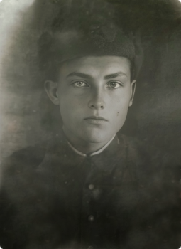
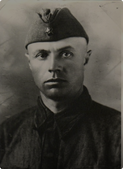
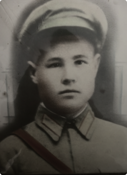

О нас
СМИ
Имена
Галерея
Фото
Видео
Аудио
Новости
Контакты
О нас
Имена
Галерея
Фото
Видео
Аудио
Новости
Контакты
Главная
Имена
Ищем родственников
Рымшин (Римшин) Архип Петрович
1907 г.р.
Алтайский край, Чарышский р-н, Маралихинский с/с, Маралиха.
Рымшин (Римшин) Архип Петрович
1907 г.р.
Алтайский край, Чарышский р-н, Маралихинский с/с, Маралиха.
Рымшин (Римшин) Архип Петрович
1907 г.р.
Алтайский край, Чарышский р-н, Маралихинский с/с, Маралиха.
Рымшин (Римшин) Архип Петрович
1907 г.р.
Алтайский край, Чарышский р-н, Маралихинский с/с, Маралиха.
Рымшин (Римшин) Архип Петрович
1907 г.р.
Алтайский край, Чарышский р-н, Маралихинский с/с, Маралиха.
Рымшин (Римшин) Архип Петрович
1907 г.р.
Алтайский край, Чарышский р-н, Маралихинский с/с, Маралиха.
Рымшин (Римшин) Архип Петрович
1907 г.р.
Алтайский край, Чарышский р-н, Маралихинский с/с, Маралиха.
Рымшин (Римшин) Архип Петрович
1907 г.р.
Алтайский край, Чарышский р-н, Маралихинский с/с, Маралиха.
Рымшин (Римшин) Архип Петрович
1907 г.р.
Алтайский край, Чарышский р-н, Маралихинский с/с, Маралиха.
Установленные имена

Феноберцев Роман Филиппович
1916 –29.1942
Красноармеец 312 сп, 26 сп, связист

Нагорнов Авакум Иванович
1907–27.03.1942
санинструктор, штаб 364 сд
Важенин Яков Захарович
1902–28.02.1942
Красноармеец, штаб 384 сд

Паньков Борис Дмитриевич
1915–02.1943
Командир отделения пулемётчиков 2-го стрелкового батальона, 648 стрелкового полка 200-й с.д.
Дементьев Иван Григорьевич
1918–04.1942
Гвардеец
Серболин Максим Никитович
1913–06.1942
Сержант 947 артиллеристского полка 384 с.д.
Герасимов Афонасий Степанович
1914–04.1942
Красноармеец
Кузьмин Иван Васильевич
1919–04.1942
Лейтенант, командир взвода роты автоматчиков 1272 с.п. 384 с.д.
Ставров Фёдор Григорьевич
1903(4)–02.1942
Красноармеец, стрелок 1272 с.п. 384 с. д.
Антропов Клемент Кузьмич
1900–25.03.1942
Красноармеец, повозочный санитарной роты, штаб 364 сд
Кулагин Иван Степанович.
1901 – 07.1942
Фамилия Имя Отчество
Годы жизни
Звание
1
2
3